#12271 Geheimaktion Crossbow
Alternativ: Operation Crossbow (Englischer Titel)
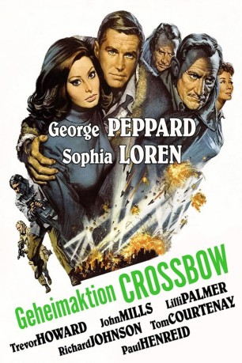 
 IMDB-Wertung: 6.6 / 10
IMDB-Wertung: 6.6 / 10  Tomatometer: 71
Tomatometer: 71  Metascore: 0
Metascore: 0 
Drei ausgesuchte englische Agenten springen 1943 über Holland ab, um die Produktion der deutschen V-Raketen zu sabotieren. Unter Einsatz seines Lebens dringt einer von ihnen in die unterirdische Raketenfabrik Mittelbau vor und weist den alliierten Bombergeschwadern durch das Öffnen der Abschussrampen den Weg. "Geheimaktion Crossbow" ist ein spannender und aufwändig inszenierter Spionagethriller.
Jahr: 1965
Dauer: 111 Minuten
FSK: 12
Land: England Studio: MGMTonspuren: DD5.1 - ,
Untertitel:
Auflösung: 1080p (1920x824) Größe: 11878 MB
Genre: Action, Drama, Krieg
Regisseur: Michael Anderson
Drehbuch: Duilio Coletti, Vittoriano Petrilli, Emeric Pressburger, Derry Quinn, Ray Rigby
Soundtrack: Ron Goodwin
Darsteller:
- Sophia Loren als Nora Van Ostamgen
- 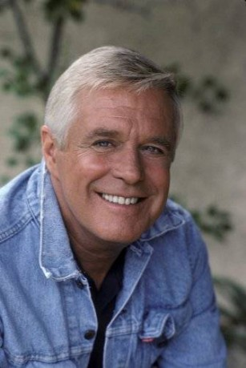 George Peppard als 1st Lt. John Curtis USAAF
- 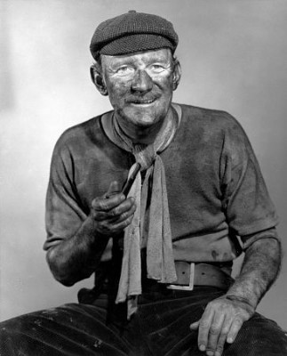 Trevor Howard als Professor Frederick Lindemann
- 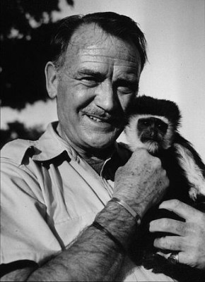 John Mills als General Boyd
 Richard Johnson als Duncan Sandys
Richard Johnson als Duncan Sandys- Tom Courtenay als Robert Henshaw
 Jeremy Kemp als Captain Phil Bradley
Jeremy Kemp als Captain Phil Bradley- 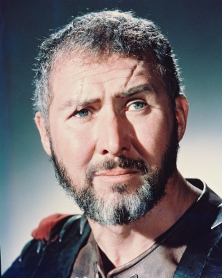 Anthony Quayle als Bamford
- Lilli Palmer als Frieda
- Paul Henreid als General Ziemann
- 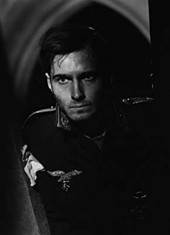 Helmut Dantine als General Linz
- Barbara Rütting als Hannah Reitsch
- Richard Todd als Wing Commander Kendall
- Sylvia Syms als Flight Officer Constance Babington Smith
- 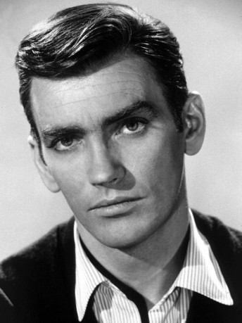 John Fraser als Flight Lieutenant Kenny Post
- 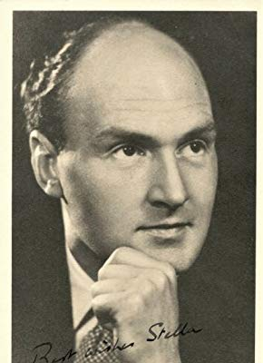 Maurice Denham als Air Chief Marshal
- Patrick Wymark als Prime Minister Winston Churchill
- Wolf Frees als German Police Inspector
- Moray Watson als Colonel Kenneth Post
- Richard Wattis als Sir Charles Sims
- 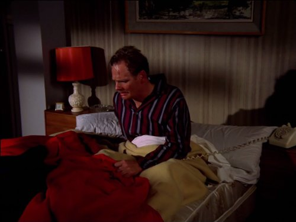 Allan Cuthbertson als German Technical Examiner
- Karel Stepanek als Professor Hoffer
 Ferdy Mayne als German Officer at Rocket Plant
Ferdy Mayne als German Officer at Rocket Plant- 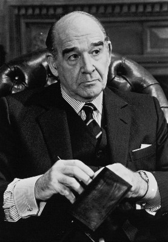 Robert Brown als Air Commodore
- 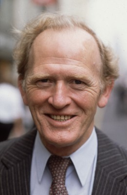 Gordon Jackson als R.A.F. Pilot (scenes deleted)
- 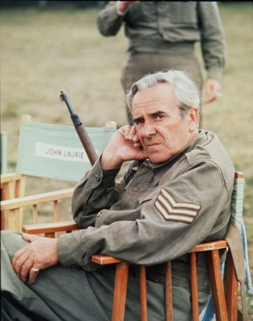 John Le Mesurier als British Army Officer (scenes deleted)
- John Abineri als German Policeman (uncredited)
- John Alderton als RAF 'Dakota' Navigator (uncredited)
 Maxwell Craig als German Soldier (uncredited)
Maxwell Craig als German Soldier (uncredited)- Guy Deghy als Dutch Barge Skipper (uncredited)
 Anton Diffring als German Soldier (uncredited)
Anton Diffring als German Soldier (uncredited)- Carl Duering als German Officer Arriving at Rocket Plant (uncredited)
 Victor Harrington als Man in Air Raid Shelter (uncredited)
Victor Harrington als Man in Air Raid Shelter (uncredited)- Gerard Heinz als German Officer (uncredited)
 John G. Heller als German Officer in Charge of V2 Launch (uncredited)
John G. Heller als German Officer in Charge of V2 Launch (uncredited)- Drewe Henley als Undetermined Secondary Role (uncredited)
 Gertan Klauber als Security Guard at Rocket Plant (uncredited)
Gertan Klauber als Security Guard at Rocket Plant (uncredited)- Philip Madoc als German Police Officer (uncredited)
- Jeremy Spenser als SS Officer at Rocket Plant (uncredited)
 Guy Standeven als Volunteer Agent (uncredited)
Guy Standeven als Volunteer Agent (uncredited)- John Tatum als German Officer (uncredited)
- 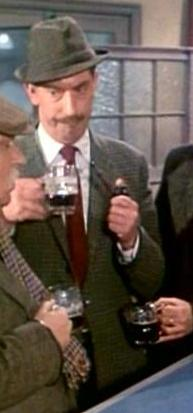 Fred Wood als Mess Steward (On the Right) (uncredited)
- William Mervyn als Dutch Technical Examiner
- Milo Sperber als German Hotel Porter
- George Mikell als German Officer at V2 Launch
- Tony Allen als German Officer (uncredited)
- Jack Armstrong als Man in Air Raid Shelter (uncredited)
- Bernard Barnsley als Power Plant Operator (uncredited)
- Ernest Blyth als German Officer Leaving Drinks Party (uncredited)
- George Lane Cooper als Power Plant Operator (uncredited)
Datei: X:\1965\Geheimaktion Crossbow (1965, FSK12, 1920x824).mkv seit 12.01.2020
Festplatte: Gemischt-01+Anime
 Es gibt insgesamt 25 Filme in der Gruppe '1965'
Es gibt insgesamt 25 Filme in der Gruppe '1965'